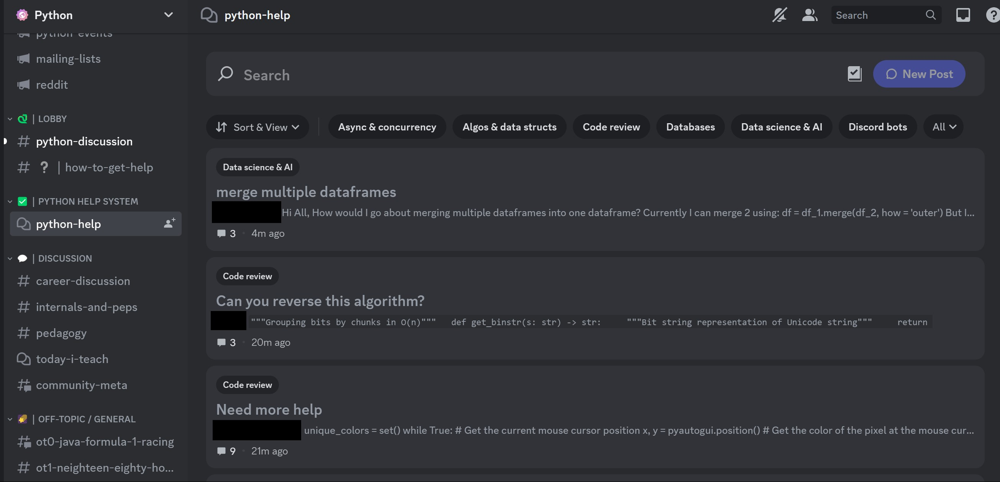

Links and Tutorials
Python has a HUGE community with many different resources. This is only a small fraction of what's available. However, our team tried to select significant resources that are used by many people:
1.
This link is for the (approved) official documentation.
It includes all of the libraries outlined in the history section, and the documentation for Python 3.
It's a good idea to go to these links first, as it will give you definitive answers on how to use something.
The Python website has generalized information (not library specific) on the syntax/usage of Python:
By contrast, each library's site is specific to the library. For example, if you want to do mathematical operations, numpy is a good place to go. Each library's site also gives you background on the library. If you are unsure whether the library can help you accomplish something, the links below are a good place to start.
https://numpy.org/https://pandas.pydata.org/
https://matplotlib.org/
https://seaborn.pydata.org/
https://scikit-learn.org/stable/index.html
If you want to get a good idea on how to use each library, you can find it easily by starting with the links above. However, because we love you, we have given you the respective user guides from each one (easy reads compared to other sources of information):
https://numpy.org/doc/stable/user/index.html#userhttps://pandas.pydata.org/docs/user_guide/index.html#user-guide
https://matplotlib.org/stable/users/index.html
https://seaborn.pydata.org/tutorial.html
https://scikit-learn.org/stable/user_guide.html
Additionally, there are tutorials/learning platforms on these sites that you might also find useful. They are also easy to find, but we love you, so we put them here:
https://docs.python.org/3/tutorial/index.htmlhttps://numpy.org/learn/
https://pandas.pydata.org/pandas-docs/stable/user_guide/10min.html
https://matplotlib.org/stable/tutorials/index
https://seaborn.pydata.org/tutorial.html
https://scikit-learn.org/stable/tutorial/index.html
Note: The user guides and the tutorials are similar, and you will see some overlap in terms of material. However, in general, user guides are documentation with some instructions, and tutorials are actual lessons (where you are shown how to do specific things).
2.
The Python community has a lot of different forums to interact with other Python users.
There's even in person meet ups! Here is the hub for the options from the official site:
For example, there is a discord server that is dedicated to Python:
https://www.pythondiscord.com/Upon joining the server, you get a bunch of options for channels. One of them is for asking questions:
This is only one example of the many places you can go to ask questions and be a part of this large community.
3.
Not to sound like a broken record, but if you want to learn how do something specific, there are a LOT of different resources out there.
For the remaining links, we tried to pick different websites for each. If you read the history section,
you should remember that Microsoft has an interest in this language.
Therefore, it is safe to assume that it has its own resources for getting familiar with Python.
Python is known for scripting and automation (running automatic instructions), and Microsoft has a good resource for this:
4.
Machine learning is arguably the most important and well known application of Python. There are many places you could go to learn this specific craft.
Real Python is one of these places. It has many great python tutorials, including machine learning:
5.
Python can also be used for web development. Specifically, if you have a web application that requires machine learning, Python is your best friend.
Python also takes advantage of many different web frameworks, giving you a lot of options:
One of the most popular and simple frameworks to use is Flask. It standardizes and simplifies syntax, and is best for building APIs (among other things):
https://www.planeks.net/what-is-flask-used-for/The article below outlines a good roadmap for web development (with a Flask emphasis). One thing I should point out in this roadmap is that it's extremely beneficial to learn about HTML, CSS, and JavaScript, as it's used in conjunction with Python. If web development is the route you want to go, JavaScript specifically will give you some great tools for your front end. The site itself is one of the many paid sites that provide ways to level up your Python skills:
https://www.educative.io/blog/web-development-in-pythonInstall and Use
1. See if Python is already installed by typing "python" or "py" in a terminal. If you see "Python 3.x.x" (where each x is a number) with additional instructions, it's installed.
If you don't see this, go to step 2. See this site for more information:https://wiki.python.org/moin/BeginnersGuide/Download.
2. Find your OS in the link above, and see specific instructions. In most cases,
you will download the installer from this site: https://www.python.org/downloads/.
If there is any option to "add to path" or
"add environment variables", select it. If this is your first time installing such software, it's recommended to not try custom/offline installs.
It's also recommended to install the latest Python 3 version, even if you have an earlier version already installed.
3. Use the same command from step 1 to see if it's installed. If not, try step 2 again.
4. It's important to note that you can technically start developing in your console. However, since this is probably your first time,
we'll hook you up with an IDE (environment for coding) that will be easier to get started with. VS Code is sick, and a popular choice among Python developers.
Download it by following the instructions here: https://code.visualstudio.com/download.
5. Next, install the Python extension for VS Code. The easiest way to install it is by clicking on the extensions badge, searching for Python,
and installing the option that comes up:
6. To install needed libraries, pip will get the job done. Pip is a package management system that makes it easy to install libraries.
Follow the simple instructions here: https://pip.pypa.io/en/stable/installation/
One thing that might be confusing is the script you need to download.
Some browsers require that you right click this link https://bootstrap.pypa.io/get-pip.py,
and select "Save As". After doing this, it should be cake from there.
After running your OS's "get-pip.py" command, you can check if it works by simply typing "pip" in the console. Please do not install earlier versions of pip.
7. To install the actual libraries, you can use the users guides for each respective library. Fortunately, each pip command that installs the library is very simple in my humble opinion:
pip install numpy
pip install pandas
pip install matplotlib
pip install seaborn
pip install scikit-learn
Your command may vary based on your Python version. For alternate ways to install, reference the user guides. To check if your library is installed, create a new python script, and use an import statement in VS Code. Here's some visual instructions that'll show you how to do this for a library (you don't have to pick the Desktop, just pick any folder to check for installation):
If you don't see any "problems" related to the import (or yellow squiggles under the import), you got it! If you swore you installed the package, but are getting a related problem, bring up the command palette with Ctrl-Shift-P (Shift-Command-P for Mac), and search for the following (it will require you selecting the version of Python you installed the library on):
The reason this is a good way to check installations is because in most cases, this will be the environment you develop in. This environment gives you immediate feedback on whether your programs are able to run. If you are new to this, please spend extra time learning about the syntax of each library before messing around with it too much. At a minimum, you should know what a proper import statement looks like for each one.
More Example Programs and Building
This section will include various general programs that help to exhibit how Python works. Examples include a simple 'Hello World' program and a program that exhibits Python's scoping mechanisms. It may also include a manipulation of a common data structure used in Python and later discuss Python's build system and interpreter, and common ways to run a Python program. To emphasize how Python programs run, we will exhibit different examples of running a program and demonstrate which commands are used.
There are several ways to run Python code via interpretation:
1. Make a program in the shell. Here's how:
This is where you can write code on the fly, and have it run without an IDE or any additional steps. Pretty cool!
2. Run a Python script directly. Let's say we already have a file. Let's say example.py has the following content:
a = 1
b = 2
print(a - b + a)
As you can see, it only shows the output. Good enough! And, in many cases, it beats having to rewrite each line of code you need.
3. In an IDE. IDLE is one example. It's a fairly lame IDE that comes with many Python installations. VS Code is cooler, so we'll show you that one, check it out!
See the highlighted triangle in the top right? Click that, and it runs your program. What's cool is that it'll display the result in a terminal, similar to the one you can use for step 2. All you have to do is either open the file directly (File-Open File... in the menu), or open the folder that the file is in (see the option below Open File). Then, you can edit the code directly if you please, or run it as is.
More example programs
Now, we will show you some other example programs. Check out the history section if you want to see some more!
1. Hello World:
print("Hello World!")
This is easy enough to understand, hopefully. It prints hello world to the console. It's the easiest program you can make, and fits it with Python's simple nature.
2. Python scope example:
def a():
x = 1
def b():
x = 2
return x + 4
return b
x = 3
c = a()
print(c() + x)
Hell yeah! Python has static scoping, which means that variable values are determined by position. When you use the def keyword, you are creating a function. Additionally, since you don't need to declare the type before a variable, you can set a function to equal a variable (c). When c is printed, you first go to the a function, where x is set to 1. Then, you go to b, where x = 2. Since we are in the scope of the b function, x equals 2, and 2 + 4 is returned. Then, you add x to it in the final print statement. In this "outer" scope, x = 3, so 9 will be printed (2 + 4 + 3).
3. Manipulate a common data structure (dictionary):
d = {"a": 0, "b": 2, "c": 3}
d["a"] = 1
d["d"] = 4
del d["d"]
print(d["b"])
for key in d:
print(key)
for value in d.values():
print(value)
for key, value in d.items():
print(key, value)
The dictionary is similar to associative arrays in other languages with key value pairs. It's used quite often, and has flexible ways to access elements in the data structure. You an initialize an empty dictionary by putting left and right curly braces together: {}. In this example, we put key value pairs we wanted the dictionary to start out with. To set a value in the dictionary, you can put the key in the square brackets on the left, and the value on the right of the equals sign. You can also remove a key value pair with "del" as seen above. Also, you can access the value of a given key as such: dictionaryname[keyname]. For iterating over the dictionary, you can use one of the for loops above. The first for loop iterates over the keys and prints each one. The second for loop iterates over the values and prints each one. The third for loop iterates over the keys and values, and prints each key value pair.
Comparisons with Other Languages
Python
1. Language Type: imperative, dynamic, strongly typed
2. Scope: static scoping
3. Binding: dynamic binding
4. Wide variety of uses, especially in machine learning applications, but not known to specialize for one type of usage.
R
1. Language Type: imperative, dynamic, weakly typed
2. Scope: static scoping
3. Binding: static binding
4. Also used in machine learning, but specializes in visualizing statistics.
5. Biggest similarities with Python: machine learning relevance
6. Biggest differences: static binding/more narrow usage
JavaScript
1. Language Type: imperative, dynamic, weakly typed
2. Scope: static scoping
3. Binding: dynamic binding
4. Mainly used in web development, front and backend, with an emphasis in client side development; it could be used for machine learning.
5. Biggest similarities with Python: language features: scope, binding, and it's imperative, dynamic typing
6. Biggest differences: weak typing/client side development specialization
Java
1. Language Type: imperative, statically typed, strongly typed
2. Scope: static scoping
3. Binding: static binding
4. Used for wide variety of applications, including machine learning. Similar to python in its wide usage. Good for learning object oriented programming.
5. Biggest similarities with Python: Wide usage of applications/strongly typed
6. Biggest differences: language features: statically typed, static scoping, static binding